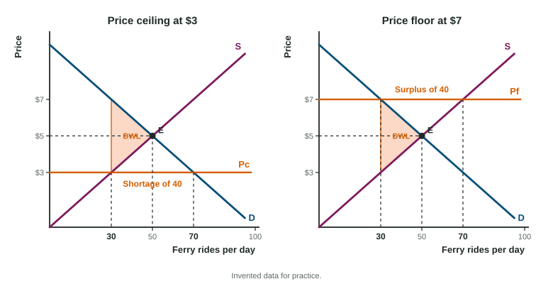

A city caps rents, and its waiting list for apartments triples. A state sets a minimum price for milk, and dairies end up with milk no one buys. A $1 tax on each can of kombucha raises the shelf price by 80 cents, not by $1. Each of these policies changes the price signals in a market, and each can be traced on a supply and demand graph by asking three questions: what happens to the quantity traded, who gains and loses which areas, and how much total surplus disappears.
Price ceilings and price floors

A price ceiling is a legal maximum price, such as rent control. It binds only if it sits below the equilibrium price. There, quantity demanded exceeds quantity supplied: a shortage. A price floor is a legal minimum price, such as a minimum price for milk. It binds only if it sits above the equilibrium price. There, quantity supplied exceeds quantity demanded: a surplus. A ceiling above equilibrium, or a floor below it, changes nothing.
In both cases the quantity traded is the smaller of the two quantities, because a trade needs a buyer and a seller. Under a ceiling, only the quantity supplied is traded; under a floor, only the quantity demanded. Fewer units are traded than at equilibrium, and the lost gains on those units are the deadweight loss (DWL): the triangle between demand and supply from the quantity traded out to the equilibrium quantity. A ceiling also moves surplus from sellers to the buyers who still find the good; a floor moves it from buyers to sellers.
Worked example: a rent ceiling. Halden, an invented city, has apartments that rent at $1,200 a month in equilibrium, with 3,200 rented. A ceiling of $900 is set. At $900, renters want 4,000 apartments and landlords offer 2,500 (invented data).
- Binding? $900 is below $1,200, so yes.
- Shortage: apartments.
- Quantity rented: 2,500, the quantity supplied, down from 3,200.
- Who gains: renters who find an apartment pay $300 less. Landlords lose that, and renters who find nothing lose too. Over time landlords convert units to other uses, supply responds more, and the shortage grows.
A per-unit tax

A per-unit tax (an excise tax) collected from sellers shifts supply up by the amount of the tax: sellers now need the tax on top of what they would have asked. Buyers pay a higher price, sellers keep a lower one (the buyers' price minus the tax), and fewer units are traded.
- Tax revenue = tax per unit × the quantity after the tax: the rectangle between the two prices out to the new quantity.
- Deadweight loss = the triangle between demand and supply from the new quantity to the old one.
- Consumer surplus shrinks to the triangle above the buyers' price; producer surplus to the triangle below the sellers' price.
Worked example: a tax on kombucha. In Ostley, an invented town, cans of kombucha sell at $3.00, 1,000 a day. A $1 tax per can is collected from sellers. Afterward buyers pay $3.80, sellers keep $2.80, and 800 cans sell (invented data).
- Revenue: a day (not 1,000 cans: only cans still sold are taxed).
- Incidence: buyers pay $0.80 more and sellers keep $0.20 less, so buyers bear 80% of the tax.
- DWL:
.
Tax incidence: the less elastic side pays more
Tax incidence is who really bears a tax. It does not depend on who hands the money to the government: a tax collected from buyers shifts demand down by the tax and gives the same prices and quantity. It depends on elasticity. The side that responds less to price, the less elastic side, cannot escape and bears more. In the kombucha market buyers bear 80%, so demand is less elastic than supply. If the curves are equally steep through the same point, the burden is split evenly.
A per-unit subsidy
A per-unit subsidy paid to sellers shifts supply down by the subsidy. Buyers pay less, sellers receive more (the buyers' price plus the subsidy), and the quantity rises past the equilibrium. Two areas are lost by students more than any others:
- The cost to the government is the subsidy times the new, larger quantity: the whole rectangle between the price sellers receive and the price buyers pay, all the way out to the new quantity. With a $2 subsidy and 60 units, $120.
- The deadweight loss is the triangle past the old equilibrium quantity, between supply (above) and demand (below): units that cost more to make than buyers value.
Quotas and the rest
A quota, a legal limit on the quantity sold, works like a ceiling on quantity: with fewer units for the same buyers, the price rises along demand, and the units no longer traded are deadweight loss. In a market that was efficient to begin with, every one of these policies lowers total surplus. Whether that cost is worth paying is a question about goals, which economics alone does not settle.
| Policy | Quantity traded | Price buyers pay | Government | DWL |
|---|---|---|---|---|
| Binding ceiling | falls (to Qs) | falls | none | yes |
| Binding floor | falls (to Qd) | rises | none | yes |
| Per-unit tax | falls | rises | revenue: tax × new Q | yes |
| Per-unit subsidy | rises | falls | cost: subsidy × new Q | yes |
| Binding quota | falls | rises | none | yes |